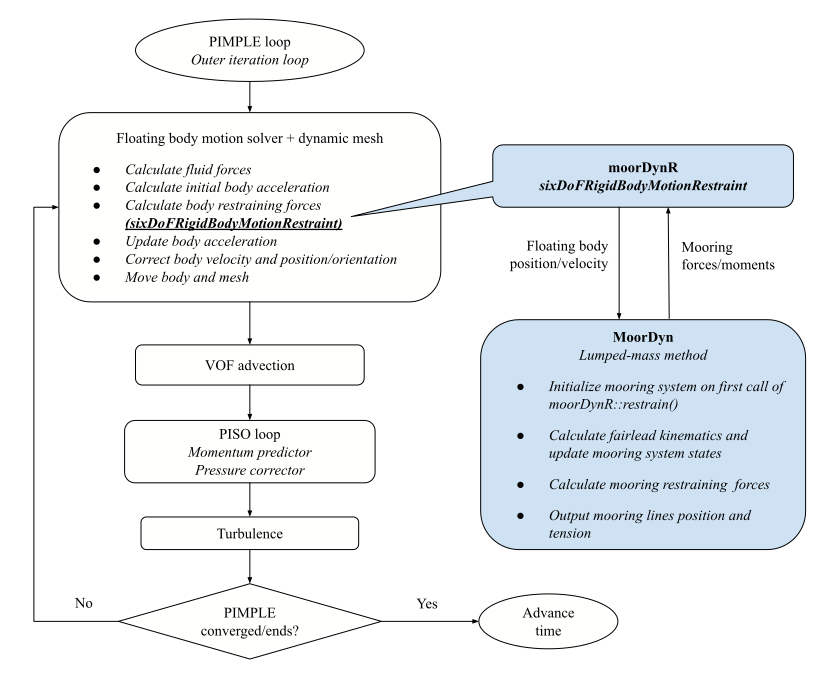

sixDoFMooring
Overview
The mooring restraint libsixDoFMooring.so enhances the native rigid body motion library sixDoFRigidBodyMotion, which solves the six-DoF motions for a rigid body according to Newton's second law. The restraint library can be simply loaded at runtime into the built-in OpenFOAM solvers interFoam and overInterDyMFoam, or into other variants (such as waveFoam and olaFlow) developed by the community.
Thanks to MoorDyn’s continuous developments, more than one mooring system instance can now be created (Lozon and Hall, 2023). This makes it possible to simulate an array of individually moored floating structures using the built-in sixDoFRigidBodyMotion library. To enable simulation of interconnected multiple bodies, a significant rewrite of the library is deemed necessary (Eskilsson and Palm, 2022).
Flowchart coupling MoorDyn with OpenFOAM
- The hydrodynamic forces/moments acting on the body are first calculated, which gives an initial acceleration for each new iteration or time step.
- All the restraining forces/moments are then requested from all instances of
sixDoFRigidBodyMotionRestraintin order to update the body’s acceleration. - Once the linear and angular accelerations are obtained, the Newmark-β integration scheme is applied to update the velocity, position, and orientation of the floating body.

Coupling modes
The coupling of the mooring models with floating body motion solver follows a loose-coupling approach. Two coupling modes, i.e., body coupling and point coupling, are proposed to indicate whether the body-mooring coupling is achieved via either the body’s center of gravity (rotation) or the mooring lines’ attachments points (fairleads) on the body.
- Body coupling
For body coupling, the position and velocity of the floating body are passed from the body motion solver to the mooring restraint, which updates the fairlead kinematics and the mooring system states such as the mooring line nodes’ position, velocity, and tension. The mooring model then calculates the total restraining forces and moments acting on the floating body by summing all mooring line contributions. The summed forces and moments are returned to the body motion solver to update the body acceleration.
- Point coupling
For point/fairlead coupling, the mooring attachments positions (calculated from the instantaneous orientation of the floating body) are passed to the mooring models to update the mooring system states. Correspondingly, instead of the total mooring forces/moments exerting on the body, the fairlead tensions from all the mooring lines are returned from the mooring model to the rigid body restraint. The restraint then sums up the total mooring forces/moments and passes them to the motion solver to update the body motion.
How to use sixDoFMooring
-
Prepare an OpenFOAM case as usual. The floating body motion can be accommodated by either deforming mesh
interFoamor overset gridoverInterDyMFoam. -
Add in
controlDict
libs (sixDoFMooring);
-
Prepare a mooring input file in case subfolder "Mooring". For example, in
tutorial/sixDoF_2D/overset/background/Mooring/MoorDyn v1:
lines.txt(filename hard-coded)MoorDyn v2:
lines_v2.txtMoody:
boxWu_exPoint.mMAP++:
esflOWC_4lines.map -
Define mooring restraints in
constant/dynamicMeshDict
// Example mooring restraints available in libsixDoFMooring
// moorDynR1 || moorDynR2 || map3R || moodyR
MAP++
map3R
{
sixDoFRigidBodyMotionRestraint map3R;
inputFile "Mooring/esflOWC_4lines.map";
summaryFile "Mooring/esflOWC_summary.map";
waterDepth 0.5;
refAttachmentPt
(
(-0.1 0.1 -0.077)
(-0.1 -0.1 -0.077)
( 0.1 0.1 -0.077)
( 0.1 -0.1 -0.077)
);
numberOfSegments 20;
writeMooringVTK true;
}
MoorDyn
// MoorDyn v1
moorDynR1
{
sixDoFRigidBodyMotionRestraint moorDynR1;
}
// MoorDyn v2
moorDynR2_pt
{
sixDoFRigidBodyMotionRestraint moorDynR2;
inputFile "Mooring/lines_v2_point.txt";
couplingMode "POINT";
refAttachmentPt
(
(-0.25 0.3725 -0.0652)
(-0.25 -0.3725 -0.0652)
( 0.25 0.3725 -0.0652)
( 0.25 -0.3725 -0.0652)
);
writeMooringVTK true;
vtkPrefix "mdv2_pt";
vtkStartTime 0;
outerCorrector 3;
}
moorDynR2_bd
{
sixDoFRigidBodyMotionRestraint moorDynR2;
inputFile "Mooring/lines_v2_body.txt";
couplingMode "BODY";
writeMooringVTK true;
vtkPrefix "mdv2_body";
vtkStartTime 0;
outerCorrector 3;
}
Moody
moodyR
{
sixDoFRigidBodyMotionRestraint moodyR;
inputFile "Mooring/boxWu_exPoint.m";
couplingMode "externalPoint"; // "externalPoint", "externalRigidBody"
nCouplingDof 6;
refAttachmentPt
(
(-0.1 0.1 -0.077)
(-0.1 -0.1 -0.077)
( 0.1 0.1 -0.077)
( 0.1 -0.1 -0.077)
);
waveKinematics false;
twoD true;
}